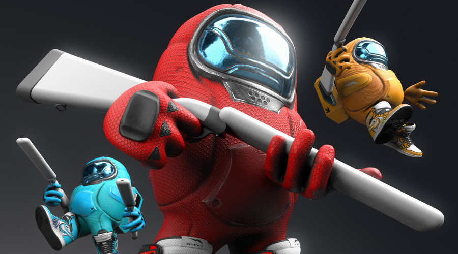

Novo Drip Among Us vira febre
Entre no jogo da moda e mostre seu estilo espacial com o lançamento do mais recente "drip" de Among Us! Prepare-se para uma invasão de moda intergaláctica, pois o novo conjunto de roupas inspirado no jogo está deixando a comunidade fashion de queixo caído.
Rumores sugerem que acessórios exclusivos também estão disponíveis. Desde bonés com antenas até lenços com estampas de mini-asteroides, você certamente encontrará algo para aprimorar seu visual espacial.
Se você é um fã fervoroso de Among Us e também ama moda, não perca a chance de adquirir o mais novo drip. Ele está disponível em lojas selecionadas, mas corra, pois as peças estão desaparecendo tão rápido quanto um impostor em uma reunião de emergência!
Agora é a sua chance de se tornar a estrela galáctica do universo da moda. Vá em frente, desfile sua criatividade e faça todos se perguntarem: "Quem é o impostor da moda?".